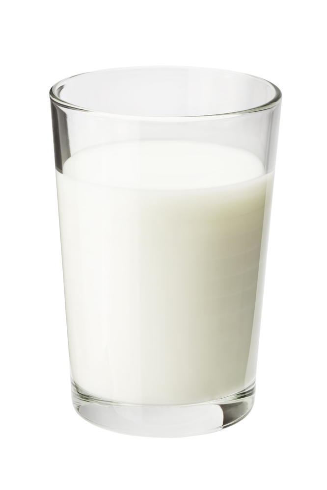

Milk
Milk is nature's most delicious basic sauce. To obtain fresh milk, I recommend using your own goat (or cow) and following these instructions. Alternativesly, buy some milk at the farmer's market or grocery store. The most common use of milk as a sauce is for pouring over cereal. It is also a popular dipping sauce for cookies.